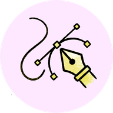
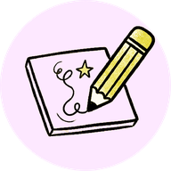
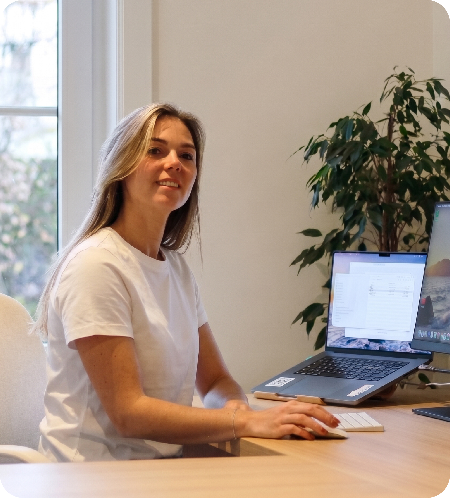

Graphic design
Van print tot digitaal: ik maak ontwerpen die de juiste boodschap op een heldere en aantrekkelijke manier overbrengen.
(My work)
(Services)
Ideeën vertalen naar doordachte ontwerpen,
van eerste concept tot de kleinste details.

Van print tot digitaal: ik maak ontwerpen die de juiste boodschap op een heldere en aantrekkelijke manier overbrengen.
Ik ontwerp websites die er goed uitzien en tegelijk gebruiksvriendelijk zijn, met aandacht voor structuur, uitstraling en beleving.
Ik ontwikkel merken van logo, kleur en typografie tot de volledige uitwerking op drukwerk, social media en andere toepassingen.

Ik voeg graag een speels extraatje toe met illustraties en animaties die een huisstijl versterken en een ontwerp tot leven brengen.

(About Me)
Hallo, ik ben Delphine, graphic designer met een passie voor vormgeving en alles wat daarbij komt kijken. Al 8 jaar werk ik in een creatief agency, waar ik aan heel uiteenlopende projecten meewerk. Die ervaring heeft mijn liefde voor het vak alleen maar versterkt en me de kans gegeven om mijn creatieve blik en vaardigheden verder te ontwikkelen.
Ik haal veel voldoening uit het bedenken en uitwerken van ideeën en experimenteer graag met beeld, kleur en typografie. Ik ben nieuwsgierig, sta open voor nieuwe uitdagingen en blijf mezelf graag uitdagen om bij te leren.